みなさんUnityでRiderを使っていますか？
使ってないあなたも！既に使っているあなたも！これを読んで効率的な開発を！
HN: すいま
所属班: プログラム班
回生: 3回生
Twitter: @SuimezZZ
.NETで開発してる人向けです。 初心者でも熟練者でも読める内容だと思います。
今回はUnityに絡めていろいろ紹介していきます。
RiderはJetBrains社が開発する.NET向けのクロスプラットフォームIDEです。
同社が開発しているReSharperというVisualStudio向けアドオンに、IntelliJというプラットフォームを合わせたものになります。
WindowsだけでなくMacでもLinuxでも使えます。
ちなみに名前の由来は「ReSharper」+「IDE」→「R + IDE + r」でRiderです。
また、通常は使うのにお金がかかりますが、千葉工大の学生であれば無償で利用可能です。
公式サイトからダウンロードできます
とにかくIDE、ReSharperの支援が凄い！！！
これを使ったらもうVSには戻れない！！！
ということでこの記事ではRiderの機能のごくごく一部を紹介していきます。
この記事を読んだあなたはきっとRiderを即DLするくらい興味を持ってくれるはず……！
ちなみに私はVSを全然使っていないのでVSと被る機能を紹介することもありますが悪しからず。
また、ショートカットキーを多用しますが、環境によって異なる場合があるのでご了承ください。
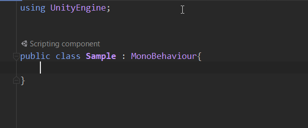
画像の通りです。usingを追加しないと使えない型もらくらく使えます。
あのクラスってどの名前空間だっけ？ってことがなくなります。
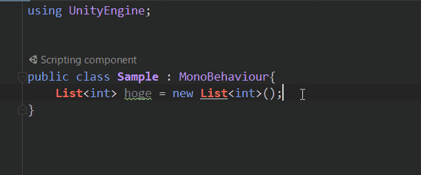
既に書いてあるコードの型の補完にも使えます。どっかからコードをコピペしてきても、わざわざ名前空間を調べる必要はありません。
「Alt + Enter」 で勝手にusingを追加してくれます。
「Alt + Enter」はこれ以外にも色んなとこで使えます！とりあえず押しとけばOK！！
Namespaceをフォルダ名から取って付けてくれる 機能です。
例えば、「Asset\Scrips」に以下のようなフォルダとC#ファイルが入っているとします。
Scripts
│
├── Enemy
│ ├── Boss
│ │ ├── BossBase.cs
│ │ └── NormalBoss.cs
│ ├── EnemyBase.cs
│ └── NormalEnemy.cs
│
├── Player
│ ├── PlayerJump.cs
│ └── PlayerMove.cs
│
└── UI
├── ResultUI.cs
├── TimerUI.cs
└── Title
├── Exit.cs
├── Menu.cs
└── Setting.cs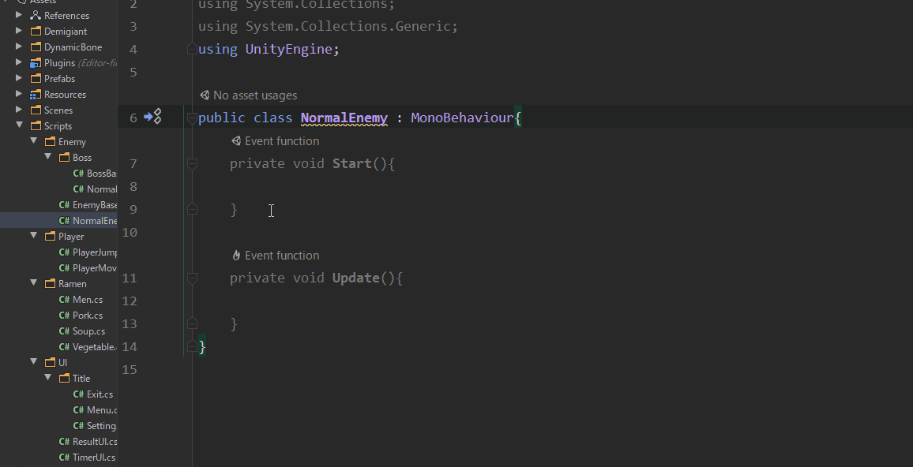
「Refactor this...」 → 「Adjust Namespaces」 でウィンドウが出てきます。
Nextボタンを押せば、チェックがついたcsファイルまとめて全部Namespaceを付けてくれます。
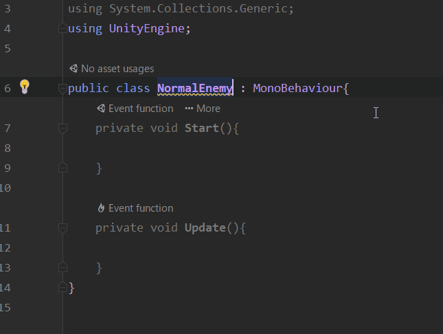
もちろん単独での追加も可能です。
「Alt + Enter」 で楽々。
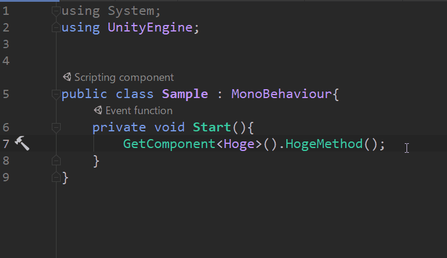
これはメソッドの実装に飛ぶ例です。メソッドだけじゃなくクラスでもなんでもOK
「Ctrl + 左クリック」 または 「Ctrl + B」 でできます。
なんでもかんでも検索してくれます。
クラス名やメソッド名やフィールドはもちろんファイル名や設定までなんでもかんでもです。
コードを書いてるときにあのクラスってどういう役割だっけ？とか、エクスプローラーからファイル探すのだるい、とか、あれのショートカットキーってなんだっけ？とか、いろいろ使えます。
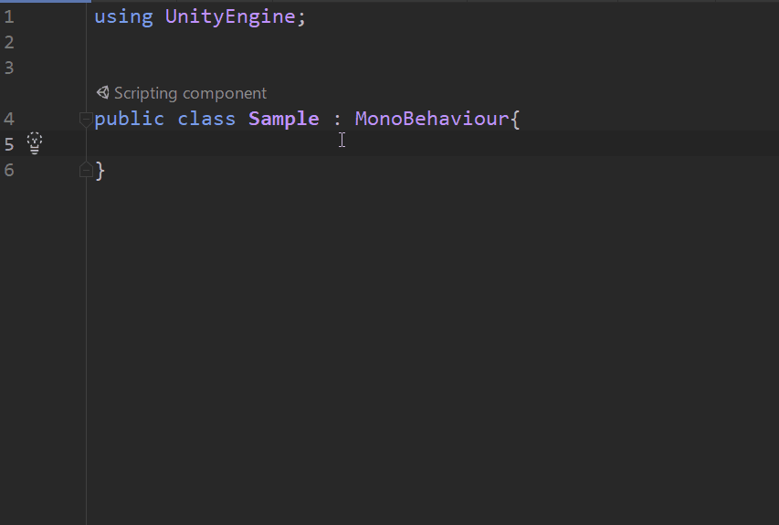
「Shift」を2回押すと検索フォームがでてきます。
メソッドやプロパティなどが、どこで使用されているかを調べることができます。
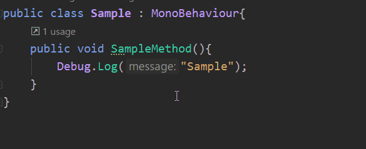
「n usage」 をクリックすると使われている一覧が表示されます。
「Alt + F7」 でもできます。
コンポーネントがUnityのどこで使われているか調べることができます。
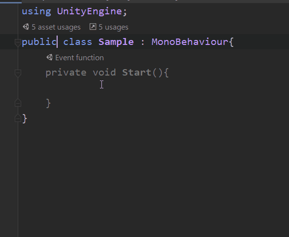
「n asset usage」 をクリックすると、そのクラスをアタッチしてるオブジェクトが一覧で表示されます。選ぶとUnityにフォーカスが移りハイライトしてくれて、さらに一覧のウィンドウも表示されます。
メソッドも探すことができます。
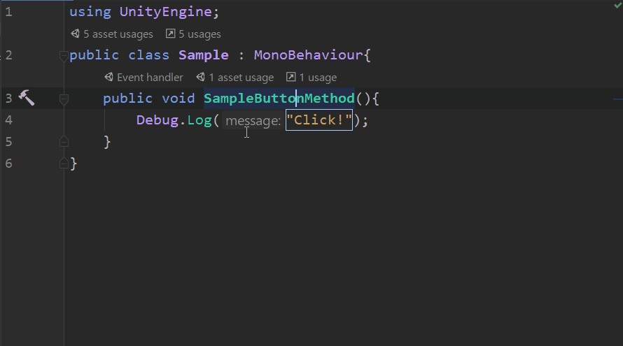
ボタンのOnClickに使用されているメソッドを探してみました。
こっちも使い方は同じです。
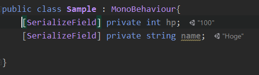
画像の通りです。
SerializeField属性のフィールドにUnityエディタ上から値を入力していると、それを表示してくれます。
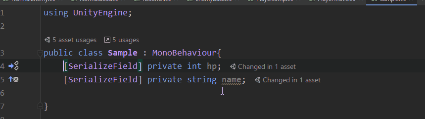
複数アタッチされている場合は、どのオブジェクトにフォーカスするかを選択できます。
Code Inspectionsは コードの問題を検出してくれる機能 のことです。
ランプのマークや下線で教えてくれます。
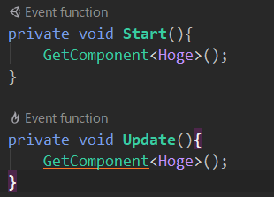
このコードはStart関数とUpdate関数それぞれでGetComponentを呼んだ時のスクショです。
初心者がやりがちなUpdateでGetComponentを呼ぶという大罪です。RiderはUpdateの時だけ線を引いて教えてくれます。これはコストのかかるメソッドだよ～～と。
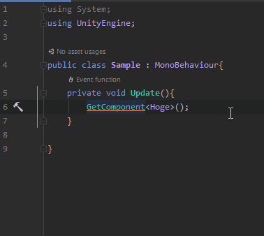
これも 「Alt + Enter」 でバーンと直してくれます！
ビフォー
public class Sample : MonoBehaviour{
private void Update(){
GetComponent<Hoge>();
}
}アフター
public class Sample : MonoBehaviour{
private Hoge hoge;
private void Start(){
hoge = GetComponent<Hoge>();
}
private void Update(){}
}private変数を作ってStartでキャッシュするよう修正をかけてくれました。
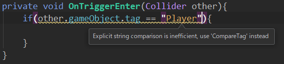
他にもこんな感じ。
タグを比較するときはCompareTagを使え、と教えてくれていますね。
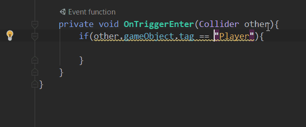
そしてこれも 「Alt + Enter」 で「こう直せばいいんじゃない？」と教えてくれます。
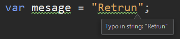
変数名やクラス名はもちろん、文字列の中のタイポまで緑のにょろにょろで教えてくれます。
冗長なforaechをLINQに変えてくれます。
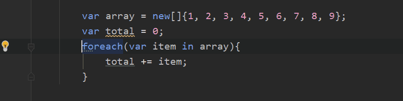
var array = new[]{1, 2, 3, 4, 5, 6, 7, 8, 9};
// ビフォー
var total = 0;
foreach(var item in array){
total += item;
}
// アフター
var total = array.Sum();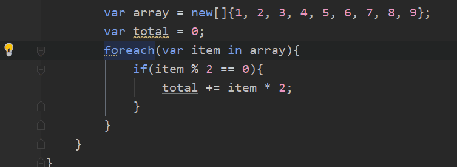
var array = new[]{1, 2, 3, 4, 5, 6, 7, 8, 9};
// ビフォー
var total = 0;
foreach(var item in array){
if(item % 2 == 0){
total += item * 2;
}
}
// アフター
var total = array.Where(item => item % 2 == 0)
.Sum(item => item * 2);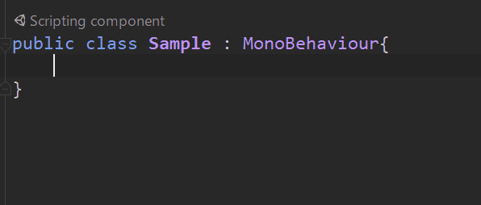
なにか打ったら何か候補を教えてくれます。良いですね～～
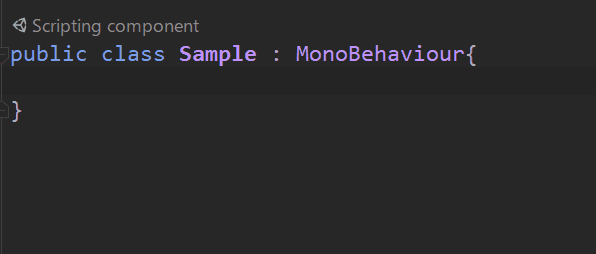
C#のクラスのメンバはデフォルトでprivateとして扱われます。それも勝手に補完してくれます。
そして、型名から変数名も考えてくれます。
Riderでは、タイポを防ぐためにこんな機能もついています
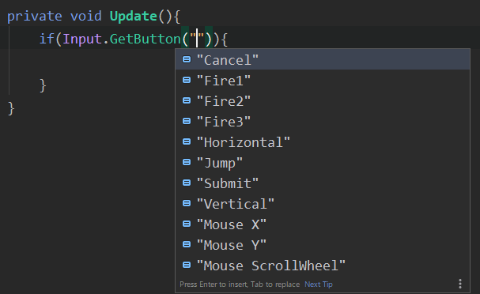
これは、InputManagerに登録されているキーを候補に出してくれます。
これでもう間違えようもないですね。
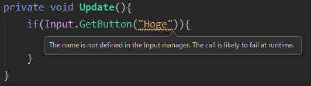
もし存在しないキーを入力してしまっても、ないよ～～～って教えてくれます。
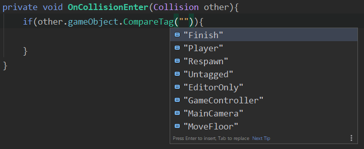
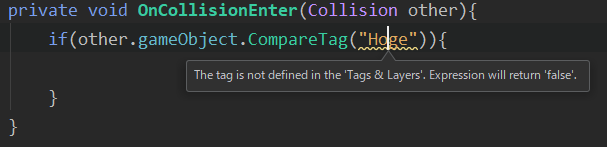
タグ、レイヤー、シーン名、のときも同じです。
「Alt + Insert」 でコード生成をすることができます。
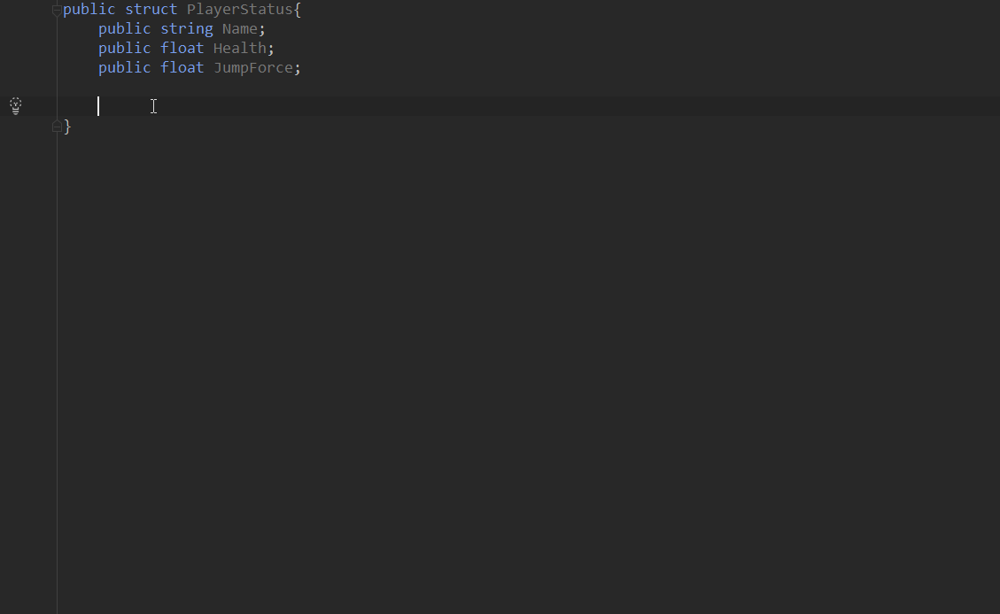
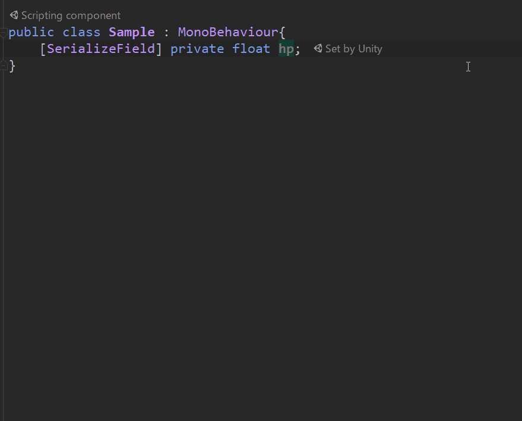
これは、既に宣言しているフィールドを参照するプロパティを自動で宣言してくれます。
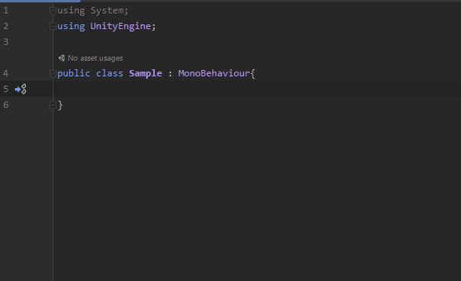
途中まで打てば、シグネチャを含めイベント関数を補完してくれます。
イベント関数を使うときは返り値なんて気にしないでしょう。関数名だけ知っていればいいのです。
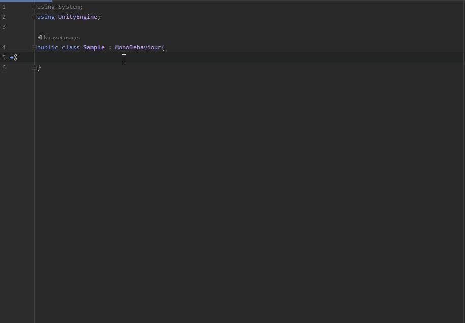
こっちは、イベント関数一覧からチェックボックスでポチポチしてくと生成してくれます。
他にもいろいろなものを補完、生成できます。
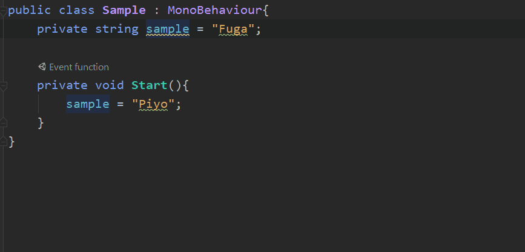
変数名や関数名はもちろん、クラス名やファイル名などを簡単にリネームできます。リネーム機能を使うと、他の行やファイルでも一括で変えてくれます。
「F2」 を押すとウィンドウが出るので入力して終わり。簡単！
また、文字列やコメントも含めて変換することもできます。
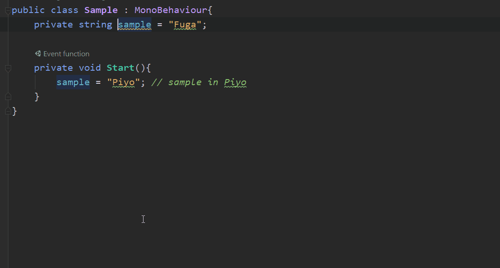
リネームのときに「Search in comments and string literals」にチェックを入れるだけです。
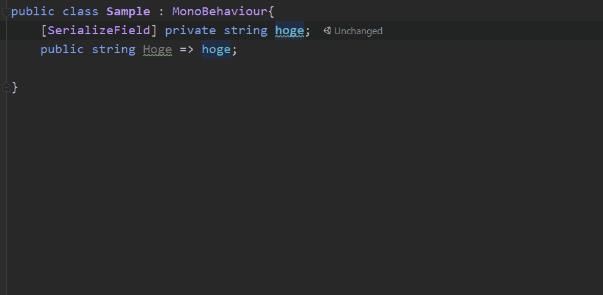
また、バッキングフィールドは参照元も一緒に変えてくれます。この例では、プロパティ名を自動でアッパーキャメルにしてくれました。
Riderはデフォルトだと「Ctrl + S」でいちいち保存をかける必要がありません！！！自動で保存してくれます。ありがたや……
めちゃくちゃ強力です。
LiveTemplateは、ある単語を入力するとコードに自動変換してくれる機能です。
Riderにはデフォルトでも沢山のLiveTemplateが用意されています。
foreachやwhileといった基本的なものから、コルーチンやSerializeField属性フィールドを生成したりなど、めちゃくちゃ便利な機能です。
既存のLiveTemplateは公式サイトやGithubで公開されていますが、使い方なども含め、個人的によく使うやつをいくつか紹介します。
IEnumeratorを返り値とするメソッドを作ってくれます
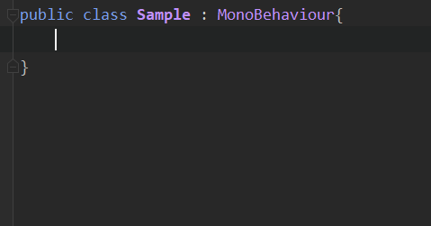
Serializefield属性のフィールドを作ってくれます
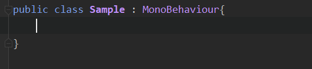
RequireComponentを付与するやつです
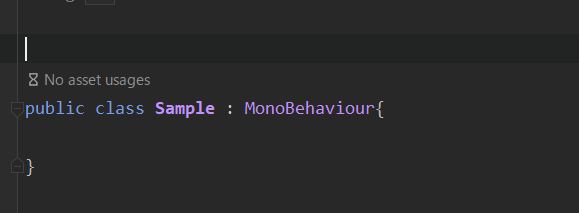
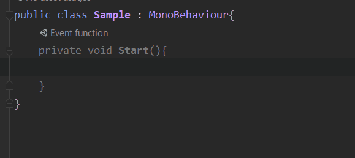
とりあえずこんな感じです！すごいでしょう？？？？
とても便利なLiveTemplate
実は、自作できちゃうんです！！
デフォルトに「sprop」というLiveTemplateがあります。SerializeField属性をつけたprivateなフィールドをバッキングフィールドとして持つプロパティを作ることができます。
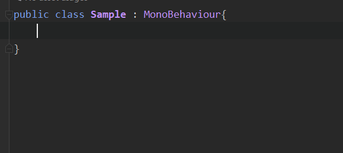
[SerializeField] private int hoge;
public int Hoge{
get{return this.hoge;}
}こんなのができるわけですが、でもこれって今風の書き方じゃないですよね。
C#6.0からは以下のような書き方ができます。
[SerializeField] private int hoge;
public int Hoge => hogeいつも書いてるのはこっちじゃん！ということでLiveTemplateを作っちゃいましょう。
「File」→「Setting」→「Editor」→「LiveTemplate」で編集画面を開きます。
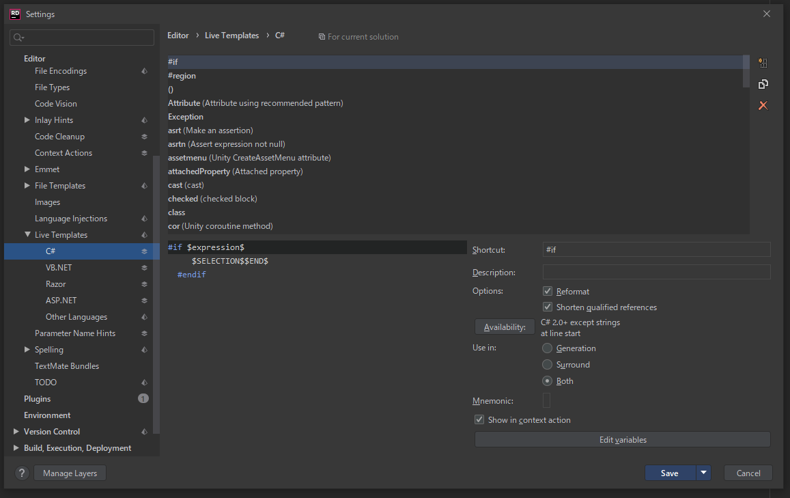
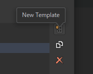
編集画面の右上にある「New Template」をクリックすると新しいLiveTemplateが作れるようになります。
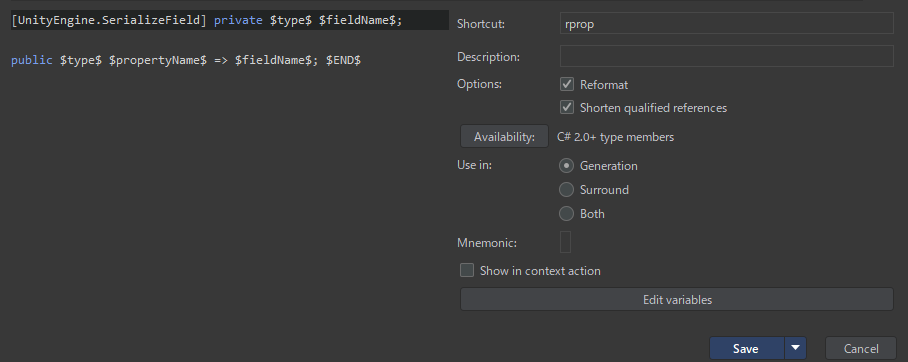
そしてspropから適当にパクってきて補完内容とショートカット名を書く！！
readonly propertyということで「rprop」で設定してみました。
[UnityEngine.SerializeField] private $type$ $fieldName$;
public $type$ $propertyName$ => $fieldName$; $END$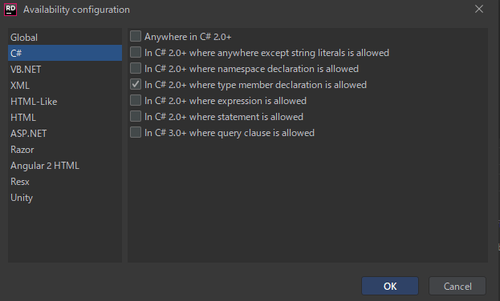
最後にAvailabilityをメンバに制限する設定にしたら完成！！めっちゃ楽！！！
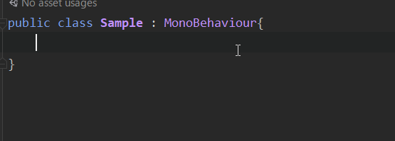
めっちゃ良いですね！！！！！！！！最高！！！！！！！！！
ついでにUniRx御用達のこの文句もやってみました。
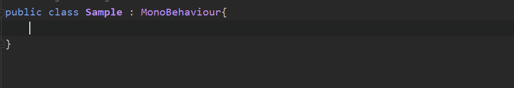
private readonly Subject<$type$> $fieldName$ = new Subject<$type$>();
public IObservable<$type$> $propertyName$ => $fieldName$;$END$めっちゃ良いですね………。
$で囲まれているのはLiveTemplate変数ですが、マクロを設定することができます。この例ではtype変数のデフォルトをUnitにしてみました。
そして、propertyNameはfieldNameのアッパーキャメルに設定しフォーカスをスキップする設定にしました。とても快適です。
昨日の記事に引き続き、読んでくださりありがとうございます。3回生P班のすいまです。
Riderの記事はいかかでしたでしょうか？使う気になってくれましたか？！？？！
昨日の記事よりは大分マイルドな内容になったと思います。
Riderは初心者から熟練者まで誰でも使えるツールです！是非愛用してください！！
今回いろいろ紹介しましたが、Riderの機能はこんなもんではありません。まだまだ沢山の機能が盛りだくさんです。
ということで2日間に渡りお付き合いありがとうございました！
明日は Len Dilemma くんの『みんなもやろう！早押しクイズ』です！お楽しみに！